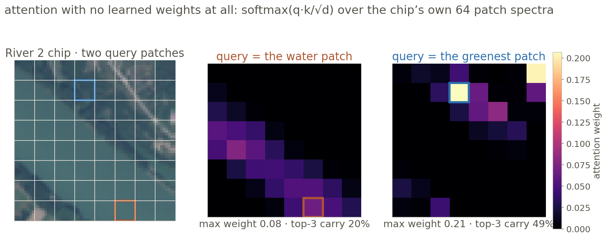
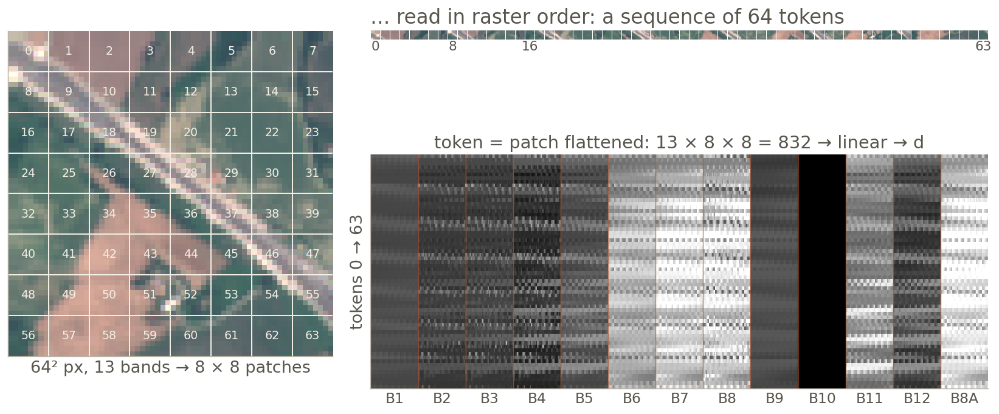
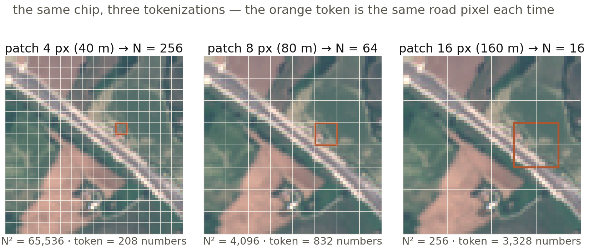
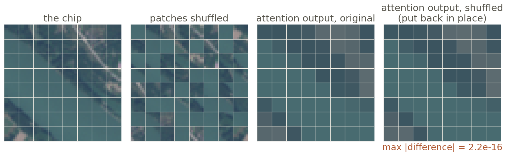
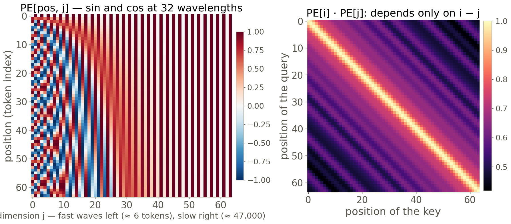
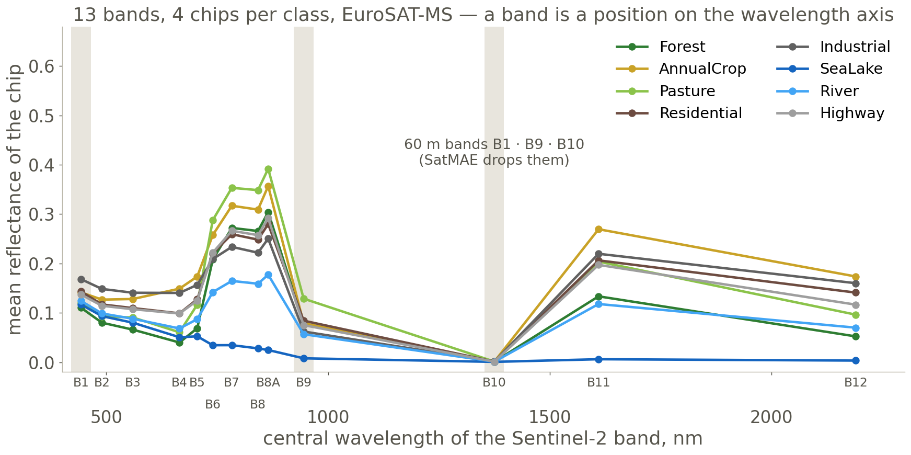
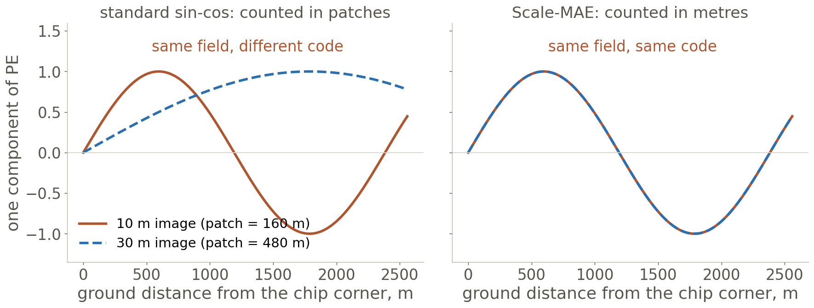

Forty Sentinel-2 chips, thirteen bands each, from the dataset you train on today. Every model this course meets from here on — Prithvi, ClimaX, Pangu, Aurora — is made of one operation. Today you write it, test it, and read the choices that make it work on the Earth.
Deep Learning Applications in Environmental Big Data · Prof. Hyunglok Kim · GISTImage: four EuroSAT-MS chips per class, true colour from bands 4-3-2, read for this lecture straight out of the 2 GB Zenodo archive; the orange grid is one 4 × 4 token window of a Swin layer. Helber et al. 2019, CC BY 4.0.
0:00 · Reading + video quiz
Quiz first — 5 minutes, closed book
3 questions on last week’s assigned video — Stanford CS231N Lecture 7: Recurrent Neural Networks (Stanford Online, 72 min).
2 questions on this week’s paper — Liu et al. 2021, Swin Transformer.
No AI, no notes. Swap with your neighbor to grade. Pass = 3 of 5 — the video alone can carry you; the paper alone cannot.
Best 8 of 10 count, 0.75% each; an optional handwritten book summary forgives one wrong answer.
Next Monday, 19 October: no lecture — the 60-min closed-book Book Check (Goodfellow Ch. 5, 6, 9, 10 + d2l Ch. 11, this week’s chapter; counts as two quiz slots). Week 7 is 26 October.
Week 6 · 55 min
Today in five blocks — and one chain of cause and effect
1 · Attention — a weighted average on a real chip, by hand, then Q·K·V, heads, masks, cost, the block — and the four tests. 2 · Tokens — patchify, patch size, the 0.25° problem, the ViT paper.
3 · Position — sin-cos, learned, RoPE; then SatMAE, Scale-MAE, ClimaX, Prithvi. 4 · Windows — Swin, shifted windows, the three weather backbones, this week’s paper. 5 · Fit — bf16 and FlashAttention. Then the contract (+ 4 min FLEX).
Journal club (30 · after break) — the three Swin questions. Lab briefing after.
Skills: attention from scratch · test-driven implementation with an agent · tokenization and positional encoding choices · windowed attention · mixed precisionEvery derivation and reference card is in the Appendix after the lab slide
Part 1 · 17 min · the headline
Attention: a Weighted Average You Can Read
What you will see Attention running on a real chip with no learned weights; the same thing by hand with four tokens; then what Q, K, V, heads and masks add; what it costs; the block it lives in. By the end: write attention in twelve lines and name the four tests that prove it.
Why it matters here Week 5’s gradient had to survive 150 multiplications. Attention connects any two tokens in one hop — that is why it replaced recurrence, and why every model from here on is built from it.
Where it is used Today’s lab (mini_vit.py) · Week 7’s masked autoencoder, built on it · Prithvi, ClimaX, Pangu, Aurora · the language model that writes your code.
Part 1 · Why attention
Last week’s gradient crossed 150 gates; attention gets there in one hop
Week 5’s gradient survived 150 multiplications; attention’s path from April to December is one hop.
Along the recurrence the gradient is a product of 150 factors; along attention it is one weight. The price: every token must score every other token — Part 1 ends with what that costs.
token — one vector in the sequence: a day of the river, a word, or (today) a patch of an image. in the figure — the dashed arrows are the same token reading other days; attention reads them all at once.
Callback: Week 5 slides 6–7 (the product, and the LSTM’s gated lane) · Vaswani et al. 2017, Attention Is All You Need, §4: “path length between any two positions”
Part 1 · The mechanism, on a real chip
Attention with no learned weights at all
Attention is a weighted average of the other tokens; the weights come from similarity — no learning yet.

Each patch is a token (its mean 13-band spectrum). Dot one query patch with all 64, softmax: the heat maps are those 64 weights. Water spreads along the river (max 0.08); the greenest patch concentrates (0.21, top-3 = 49%).
Output = Σj wij vj — the spectrum of the places it attended to. Learning only adds the maps that decide what counts as similar.
softmax — turns N scores into N positive weights that sum to 1: wj = esj / Σ esk. q, k, v — here all three are the token itself (z-scored per band).
EuroSAT-MS River_2, 8 px patches, d = 13 · computed for this lecture · uniform weight = 1/64 = 0.016
Part 1 · By hand
Four tokens, two numbers each: attention by hand
Four tokens, two numbers each — the whole mechanism on one board; the projections set how sharp it is.
Water keeps 95% on itself; crop and built lean on forest because their NDVI points the same way. Rows sum to 1: every output is a mix of the inputs — nothing is invented. With q = k = x the rows are 0.35 / 0.19 / 0.24 / 0.23, flat: scaling by 3 scales every score by 9.
NDVI — (NIR − red)/(NIR + red), greenness; NDWI — (green − NIR)/(green + NIR), wetness; from the chips’ mean bands B8, B4, B3. Numbers: tools/week06_figs/out/byhand.json.
Part 1 · Query, key, value
Three linear maps: a question, a label, and a payload
Three linear maps turn one vector into a question, a label and a payload; √d keeps the softmax trainable.
Attention(Q, K, V) = softmax(QK⊤/√d) V · Q = XWQ, K = XWK, V = XWV
With unit-variance entries a dot product of d terms has variance d; divide by √d or the softmax saturates and its gradient dies. Test 1 of the lab’s four (slide 13), shapes: X is N × d in, N × d out, for any N.
Q, K, V — the N × d matrices of all queries, keys, values. softmax row-wise: each query’s weights sum to 1. d — the width; in the original paper 512, per head 64.
Vaswani et al. 2017, §3.2.1 (eq. 1 and footnote 4 on √d) · the chip and the table were this equation with W = I and W = 3I
Part 1 · Multi-head
Heads: the same cost, split into h questions
Heads are the same cost split h ways: h different questions asked of the same tokens at once.
One head of width 64 or four of width 16: same parameters, same FLOPs, four weight maps instead of one. Test 4 (equivalence): with copied weights, your module matches torch.nn.MultiheadAttention to 10−5.
h — number of heads; dhead = d / h (64 in the 2017 paper: 512 / 8). WO — the output projection that recombines the heads.
Vaswani et al. 2017, §3.2.2 · the weight packing of torch’s module (one 3d × d in_proj_weight) is the usual reason the equivalence test fails: Appendix A2
Part 1 · Masks
A mask is −∞ added to a score
A mask adds −∞ to a score before softmax — one line hides the future, the padding or the far away.
QUICK Q Today’s ViT classifies one chip. Does it need the causal mask at all? (the lab still makes you write a causal-mask test)
NO — a chip has no future. Every patch may look at every patch; the mask is all ones. The test exists because the same Attention class will run on time series next (Presto-style pixel series, the Week 11 weather emulator), and a mask bug is silent: the model trains, scores well, and has been reading the answer.
Test 2: change the inputs after step t; the output at t must not move.
causal — key j allowed only if j ≤ i. padding — sequences of unequal length filled with empty tokens that must get weight 0. e−∞ = 0 — why −∞ and not a small number.
Part 1 · The price
Every token scores every other token: N²
Every token scoring every other costs N²: measured here, ×16 tokens cost the MLP ×16 and attention ×256.
Scores are an N × N matrix: 64 tokens → 0.04 ms; 16,384 → 1.6 s on this CPU. The lab’s 64 tokens are free; one 0.25° level of the globe (65,160 tokens) needs 8.5 GB of scores per head, per layer.
N — tokens per sequence; d — width. MLP — the block’s per-token two-layer net (next slide). Attention ∝ N²d, the MLP ∝ Nd²: crossover at N ≈ d. in the figure — dashed = the N² and N trends extended, not measured.
Measured for this lecture: numpy float32, d = 64, one head, Apple M2 Ultra CPU (tools/week06_figs/measure_attention.py) · Part 2 and Part 4 are the two escapes
Part 1 · The block
The residual stream: Week 5’s lane, without the gates
A block is attention and an MLP that read from and add to a running sum — Week 5’s lane, without gates.
Along the lane the derivative is 1 + (branch) — the identity path the LSTM had to buy with a gate comes free. Test 3 (gradient flow): after one backward pass, the first block’s weights have a non-zero gradient.
LN “layer norm” — standardize each token’s d numbers (then scale, shift). residual stream — the running sum every layer reads from and writes to (Elhage et al. 2021). MLP — two linear layers with a nonlinearity, per token.
Vaswani et al. 2017 §3.1 (post-norm) · Xiong et al. 2020, On Layer Normalization in the Transformer Architecture, ICML · ViT, GPT-2 and today’s lab use pre-norm
Part 1 · The four tests
Each slide you just saw is a test you write before the agent writes code
Write these before the agent writes code: it makes them pass, you make them hard to pass by accident.
test
what it asserts
what it catches
from
1 · shapes
(B, N, d) in → (B, N, d) out, for N = 1, 64, 65; heads concat back to d
a transposed K, batch on the wrong dim, d not divisible by h
slide 8
2 · causal mask
change inputs after step t → outputs ≤ t do not change (to 10−6)
a mask on the wrong triangle; a mask applied after the softmax
slide 10
3 · gradient flow
one backward pass → first block’s WQ has grad ≠ 0; loss drops over 20 steps
a detached tensor, a missing residual, a frozen patch embedding
slide 12
4 · equivalence
copied weights → matches nn.MultiheadAttention to 10−5
a missing √d, softmax over the wrong axis, heads split before projection
slide 9
Then break it on purpose: flip the mask’s triangle and watch test 2 fail. A test that cannot fail has verified nothing — that is the lab’s first deliverable, before any training.
B, N, d — batch, tokens, width. pytest — the test runner; the agent is told the test file, not the answers.
The four tests in code, with the in_proj_weight mapping for test 4: Appendix A2 · lab briefing after the journal club
Part 1 · Watch at home
The mechanism animated, explained, typed live, and with all the math
Bridge to Part 2. Everything so far worked on “tokens”. For a 13-band chip, a token is a patch — and how big you cut the patch sets N, and N² sets the bill.
assigned video — 3Blue1Brown Ch. 6, Attention in transformers, step-by-step (26 min), quizzed in Week 7; it is in the Appendix (A10) and embeddable.
Optional, not assigned — the assigned video is 3Blue1Brown Chapter 6 (Appendix A10); its summary is due with Note 06, Sunday 18 October
Part 2 · 8 min
Tokens: Patchify, Patch Size, and the 0.25° Problem
What you will see A real chip cut into 64 tokens; the patch-size dial and what it does to N²; one level of the globe at 0.25°, and the three ways weather models escape it; what the ViT paper actually found. By the end: compute N and the score-matrix memory for any grid you are handed.
Why it matters here N² is the bill from slide 11, and tokenization is where you pay it or avoid it. Every Earth model’s first design decision is how big a token is.
Where it is used ViT-B/16: 196 tokens · the lab: 64 tokens × 3 band groups · ClimaX: 512 · Pangu: 8 × 181 × 360 · Week 7’s masked autoencoder masks 75% of exactly these tokens.
Part 2 · Patchify
An image becomes a sentence of 64 words
Patchify is tokenization: cut the chip into patches, flatten, project — 64 words of 832 numbers each.

Token = one patch flattened (13 × 8 × 8 = 832) × a linear map (832 → d). The ViT paper: 224 px / 16 = 196 tokens. The lab: 64 px / 8 = 64 tokens — then one patch embedding per band group, so 3 × 64 tokens that know which bands they came from (Part 3).
patchify — reshape (13, 64, 64) → (64, 832); in code one Conv2d(13, d, kernel=8, stride=8) does the cut and the projection at once. raster order — row by row, like reading.
EuroSAT-MS Highway_1 · Dosovitskiy et al. 2020, §3.1 · the band order in the file (B8A last) is a trap: Appendix A9
Part 2 · The dial
Patch size sets the sequence length — and the bill
Halve the patch and attention costs 16× more; double it and the road dissolves inside its token.

N = (H/p)², so the score matrix grows as p−4: patch 4 costs 16× patch 8. But at patch 16 the road is one-fifth of its token’s 3,328 numbers — the linear map must find it in the mix. Resolution of the input is what sets p, not taste.
p — patch side in pixels; H — image side. GSD “ground sample distance” — metres per pixel (10 m here), so patch 8 = 80 m. in the figure — the orange square is the same road pixel’s token each time.
EuroSAT-MS Highway_1 · ViT-B/16 vs ViT-B/32 is this dial (Dosovitskiy 2020, Table 5) · Aurora moves p from 4 to 10 when it fine-tunes at 0.1° — the same dial, for the same reason
Part 2 · The 0.25° problem
One level of the globe is 65,160 tokens — and three ways out
At 0.25° one level of the globe is 65,160 tokens after patching; its attention matrix is 8.5 GB per head.
Every machine-learning weather model is an answer to this slide. The honest version of “global attention” at 0.25° does not exist; what exists is windows, coarser grids and latents.
0.25° — ERA5’s grid, ≈ 28 km at the equator. Perceiver — a small set of learned latent tokens that cross-attend to the big input (Aurora: 13 pressure levels → 3 latent levels). mesh — GraphCast’s coarser icosahedral graph (not attention).
Bi et al. 2023 (Pangu-Weather), Nature 619 · Nguyen et al. 2023 (ClimaX), ICML · Bodnar et al. 2025 (Aurora), Nature 641 · numbers: Appendix A6
Part 2 · The ViT paper
ViT’s recipe is almost nothing — plus a lot of data
ViT’s recipe is almost nothing: patches, a learned position table, a class token — and a lot of data.
Learned 1-D positions: a table of N vectors; 2-D-aware versions gave nothing (Table 8). Data: ViT-B/16 loses to ResNets on ImageNet alone and wins only from JFT-300M up (ViT-H/14: 88.55%). Week 1’s question — what inductive bias was traded away — is answered by this slide: locality, and 300 M images bought it back. Week 7 buys it with pretraining instead.
[cls] — an extra learned token whose output is read as the image summary (from BERT); mean-pooling the patch tokens works as well. JFT-300M — Google’s private 303 M-image set.
Dosovitskiy et al. 2020, An Image is Worth 16×16 Words, ICLR 2021 — §3.1, §4.3 (Fig. 3), App. D.4 (Table 8) · card: Appendix A7
Part 2 · Watch at home
The ViT paper, three ways: five minutes, thirty, and with the inductive-bias argument
Bridge to Part 3. Patchify gave the model 64 tokens and no idea where any of them sits — the next part proves it on a chip, then puts the position back in the Earth’s own units.
patch size, data, positions — the three knobs these videos turn are the three bullets of slide 19.
Optional, not assigned · ids verified embeddable on 10 October 2026
Part 3 · 11 min · the geoscience battleground
Position: Where, When, Which Band, How Many Metres
What you will see Proof on a chip that attention cannot see where; the three generic fixes (sin-cos, learned, RoPE); then four Earth models that encode band group, metres per pixel, variable identity, and latitude and date. By the end: say which “where” your data needs and how each model wrote it down.
Why it matters here A text token has one position. A Sentinel-2 token has a pixel position, a wavelength, a date, a latitude and a ground sample distance — and a model that is told none of them learns them from scratch, or not at all.
Where it is used SatMAE and the lab’s band groups · Scale-MAE · ClimaX · Prithvi-EO-2.0 · DOFA (discussion question 2) · Presto (question 3) · Week 10’s foundation-model comparison on this very dataset.
Part 3 · Attention is a set operation
Shuffle the patches and nothing in the output notices
Attention is a set operation: shuffle the patches and the outputs just shuffle — the model cannot see where.

Scores depend on what a token is, never on where it sits: permute the inputs and the outputs permute identically (max difference 2 × 10−16). A road is a line only if the tokens know their coordinates — so the coordinates go in as numbers added to the token.
permutation-equivariant — the formal name: f(Px) = P f(x). positional encoding — any vector added to (or concatenated with) a token to break this. Convolutions never had the problem: the kernel is the position.
EuroSAT-MS River_2, the slide-6 attention · computed for this lecture · next: three ways to write the coordinates
Part 3 · Three generic answers
Sin-cos, a learned table, or a rotation
Three ways to say ‘where’: a fixed wave code, a learned table, or a rotation that reads distance.

Sin-cos (2017): PE(pos, 2i) = sin(pos / 100002i/d), cos for odd dims — fixed, extends to any N, and PEi·PEj depends only on i − j. Learned table (ViT, GPT-2): N vectors, trained; “nearly identical results” in 2017.
RoPE (2021): rotate each (q, k) pair by an angle m·θ — then qm·kn depends only on m − n: relative distance read straight off the score; the LLM default.
pos — the token index; i — dimension pair; 32 wavelengths from 2π to 20,000π tokens. RoPE “rotary position embedding”: the rotation is applied to q and k, not added to x.
Vaswani et al. 2017 §3.5 · Dosovitskiy 2020 App. D.4 · Su et al. 2021, RoFormer · algebra of the dot product and the rotation: Appendix A3
Part 3 · The battleground
On the Earth, a token’s position is five numbers, not one
On the Earth, ‘where’ also means which band, which date, which latitude, how many metres per pixel.
model
a token is …
and is told …
in units of
ViT 2020
a 16-px patch of an RGB image
its index, from a learned table
patches
SatMAE 2022
a patch of one band group at one date
x, y + band group + year, month, hour
wavelength groups, calendar
Scale-MAE 2023
a patch at a known GSD
sin-cos of position × g/G
metres
ClimaX 2023
a patch of one variable
which variable (own embedding) + hours ahead
variables, lead time
Prithvi-EO-2.0 2024
a 16-px patch of 6 HLS bands at one date
x, y, t + sin-cos(lat, lon) + sin-cos(year, day)
degrees, calendar
DOFA 2024 · Presto 2023
a patch of one band · a channel group at one month
its wavelength (generates the patch weights) · channel + month
nanometres · months
Same backbone every time; the design is what the token is told. Four get a slide: band group, metres, variable, place and date. DOFA and Presto are your discussion questions.
SatMAE embeds each band group separately and tags every token with its group — the lab does the same.

SatMAE: three groups — {B2 B3 B4 B8}, {B5 B6 B7 B8A}, {B11 B12}; B1, B9, B10 dropped; one patch embedding per group, a group encoding concatenated to x, y; 3 × 144 tokens per 96-px image; groups masked independently. The lab: the same three groups on 64-px chips → 3 × 64 tokens.
DOFA’s answer (question 2): a band is its wavelength in nm — feed λ through a small network that generates the patch-embedding weights, and one model reads Sentinel-1, Sentinel-2, NAIP, EnMAP.
red edge — vegetation’s jump between B4 (665 nm) and B8 (842 nm). masked independently — pretraining hides patches (Week 7); hiding each group separately forces cross-band prediction.
Cong et al. 2022, SatMAE, NeurIPS, §3.3 and App. A.3 · Xiong et al. 2024, DOFA · spectra: 4 chips per class, EuroSAT-MS, computed for this lecture
Part 3 · How many metres · Scale-MAE
Count the wave in metres, not in patches
Scale-MAE scales the position by g/G, so a wave is the same length in metres at 10 m and at 30 m.

PEgsd(pos, 2i) = sin( (g/G) · pos / 100002i/D ): the image’s GSD g over a reference G scales the position. A patch 480 m from the corner gets the same code whether it is patch 3 at 10 m or patch 1 at 30 m. +5.6% average over SatMAE across GSDs on 8 datasets (kNN).
g, G — this image’s and the reference ground sample distance. in the figure — one of the D/2 wave components; the slow ones barely change, the fast ones change a lot.
Reed et al. 2023, Scale-MAE, ICCV, eqs. 3–4 and Table 1 (also a Laplacian-pyramid decoder that reconstructs at two resolutions) · computed for this lecture
Part 3 · Which variable · ClimaX
Each weather variable is its own image, until a query merges them
ClimaX tokenizes each variable separately; a learned query then merges one location’s V tokens into one.
Why not stack the 48 variables as channels? Because the set of variables changes between datasets (CMIP6 pretraining, ERA5 fine-tuning) — a token per variable makes a missing variable a missing token, not a broken input layer. Aurora does the same with per-variable patch embeddings summed per level.
cross-attention — the query comes from one place (here a learned vector), the keys and values from another (the V tokens). lead time — hours ahead; one model serves every lead by being told it.
Nguyen et al. 2023, ClimaX, ICML, §3.1 (variable tokenization and aggregation) · 1.40625°: 128 × 256, patch 4 → 2,048 locations · Lab 05’s ERA5 teaser ran on this 5.625° grid
Part 3 · Where and when · Prithvi-EO-2.0
Latitude, longitude and the day of the year, as sin-cos — dropped 10% of the time
Prithvi-EO-2.0 adds where and when as sin–cos codes of lat/lon and date — and drops them 10% of the time.
Where and when are not pixels: a May chip at 35° N and a May chip at 35° S are different seasons. Two learned scalars λ decide how loud the metadata is; the 10% drop keeps the model usable on bare chips. Trained on 4.2 M HLS time series; best combined score on GEO-Bench’s 12 datasets.
HLS — Harmonized Landsat–Sentinel, 30 m, the six bands Blue, Green, Red, NIR, SWIR1, SWIR2. GEO-Bench — a 12-task EO benchmark; Week 10 runs part of it.
Szwarcman et al. 2024, Prithvi-EO-2.0, §III (temporal and location embeddings, eq. 1) · the “TL” checkpoints are the ones with these codes
Part 3 · Watch at home
Positions demystified, RoPE twice, and a 400 K-parameter model by its author
Bridge to Part 4. Position solved “where”; the 0.25° bill from slide 18 is still unpaid. Swin pays it by letting a token see only its window — and shifting the window so the walls move.
TerraTorch — IBM’s fine-tuning toolkit for Prithvi; Week 10 uses it. SSL4EO — the self-supervised-learning-for-EO summer school.
Optional, not assigned · ids verified embeddable on 10 October 2026
Part 4 · 8 min · this week’s paper
Windows: Swin, the Shift, and the Three Weather Backbones
What you will see Attention confined to M × M windows and what that does to the N² term; the shift that lets windows talk; the 3-D window over (level, lat, lon) that Pangu, FuXi and Aurora share; the paper in one slide. By the end: explain why shifting recovers cross-window flow — question 1 of the journal club.
Why it matters here It is the escape from slide 18 that every 0.25° weather model took: a window of 2 × 6 × 12 tokens costs 9 MB of scores per head where the globe cost 8.5 GB.
Where it is used Pangu-Weather (Nature 2023) · FuXi (2023) · Aurora (Nature 2025) · Swin itself in detection and segmentation backbones · Week 11’s rollout lab runs a windowed emulator.
Part 4 · Windows
Let a token see only its window: N² becomes N · M²
Swin attends inside M × M windows: the N² term becomes N · M², linear in the image.
The projections (4hwC²) are untouched; only the scores change, from every pair to pairs inside a window. The price is the thick line: nothing crosses it — until the next slide moves it.
W-MSA “window multi-head self-attention”. M — window side in tokens (7 in Swin; 6 lat × 12 lon in the weather models). in the figure — same block as slide 12; only the mask (slide 10, right grid) differs.
Liu et al. 2021, Swin Transformer, ICCV, eqs. 1–2 · the window is literally the block-diagonal mask of slide 10 — plus a reshape so the zeros are never computed
Part 4 · The shift
Move the walls every other layer and the walls disappear
Shift the windows by half a window in the next layer and any token can reach any other in a few layers.
Alternate W-MSA and shifted W-MSA: two layers connect a token to a 3M/2 neighbourhood, and the reach grows with depth like a CNN’s receptive field. Question 1: what plays the role of the shift on a globe, where longitude wraps and latitude ends?
SW-MSA — the shifted version. relative-position bias — B[i−j] added to the scores, one learned table of (2M−1)² values per head: position for free, inside the window. seam — where rolled tokens meet.
Liu et al. 2021, §3.2 (eq. 4, Fig. 4), Table 4 (ablation), Table 5 (throughput) · the shift is the whole difference between Swin and “a ViT with a block mask”
Part 4 · The weather backbones
Pangu, FuXi, Aurora: one 3-D Swin over (level, latitude, longitude)
Pangu, FuXi and Aurora share one backbone: 3-D Swin over (level, lat, lon) tokens, windows of 2 × 6 × 12.
Question 1’s answer, planted: along longitude the roll of slide 33 is the geometry — the dateline is a seam that should not exist; along latitude the walls are real, so both Pangu and Aurora give latitude an absolute code (a bias table; a Fourier encoding of position and cell area). Windows pay the N² bill; the third dimension lets a token see the levels above and below it.
3-D window — 2 levels × 6 lat tokens (6 × 4 × 0.25° = 6°) × 12 lon tokens (12°). Swin-V2 — Swin with the norm after the branch and cosine attention, for stability at scale. Perceiver — slide 18, door 3.
Bi et al. 2023, Nature 619:533, Methods · Chen et al. 2023, npj Clim Atmos Sci 6:190 · Bodnar et al. 2025, Nature 641:1180, App. B · details: Appendix A6
Part 4 · This week’s paper · 1.5 min
The paper in one slide — a ViT that behaves like a CNN
Swin: four stages that halve the grid and double the width, 7 × 7 windows, shifted every other block.
Numbers to know: Swin-T ≈ 28 M params, 4.5 GFLOPs, 81.3% ImageNet-1K; Swin-L 87.3% (ImageNet-22K); COCO 58.7 box / 51.1 mask AP; ADE20K 53.5 mIoU — all state of the art in 2021. The idea the weather models took was not the pyramid but the window and the shift.
patch merging — concatenate each 2 × 2 group of tokens (4C) and project to 2C: half the side, double the width, like pooling. FPN / UPerNet — multi-scale detection and segmentation heads built for CNN pyramids.
Liu et al. 2021, Swin Transformer: Hierarchical Vision Transformer using Shifted Windows, ICCV (Marr Prize) · Table 1 (variants), Tables 2–3 (results), Table 4 (ablations) · card: Appendix A5
Part 4 · Watch at home
Swin animated, by its author, at code level, and in eleven minutes
Bridge to Part 5. You now have a model. Two lines decide whether it trains in the lab hour or in three: the number format, and whether the N × N matrix is ever written to memory.
ICBS — the International Congress of Basic Science (Beijing), where both Chinese weather-model teams presented. Richard Turner’s ECMWF seminar on Aurora is on the shelf (A11).
Optional, not assigned · ids verified embeddable on 10 October 2026
Part 5 · 3 min · why the lab fits in an hour
bf16 and FlashAttention: two lines, eight times faster
Two lines make the lab fit: bf16 autocast (8× the T4’s rate) and SDPA, which never stores the N × N matrix.
Test your own attention; train with SDPA — test 4 is what licenses the swap. bf16 keeps fp32’s exponent, so no loss scaling; fp16 does not (values below 2−24 vanish, Micikevicius et al. 2018).
autocast — runs matmuls in 16-bit, keeps master weights in fp32. SDPA “scaled dot-product attention”, torch.nn.functional. HBM / SRAM — the GPU’s big slow memory and its small fast on-chip memory; attention is bound by moving data, not by arithmetic.
Dao et al. 2022, FlashAttention; Dao 2023, FlashAttention-2 · Micikevicius et al. 2018 · NVIDIA T4 and A100 datasheets · card: Appendix A8
Part 5 · Watch at home
FlashAttention by its author, mixed precision in six minutes and from scratch, and why GPUs go brrr
Next: the contract — the five sentences Note 06 opens with, written before the agent writes a line.
memory-bound — a kernel limited by moving bytes, not by arithmetic; FlashAttention’s whole idea. GradScaler — PyTorch’s loss-scaling helper for fp16 on a T4.
Optional, not assigned · ids verified embeddable on 10 October 2026
Part 5 · The contract
Write the tests and the tokenization down before the agent starts
Note 06 opens with five sentences, written before training: (1) the four tests with their tolerances, committed before any model code; (2) the tokenization — patch size, band groups, N, which positional encoding; (3) the model card — d, heads, depth, parameter count, pre-norm; (4) the baseline — a CNN of similar size, same split, same epochs, same augmentation; (5) the split and metric — EuroSAT’s class-wise 80/20, overall and per-class accuracy, seed.
A test that cannot fail has verified nothing; a baseline on a different split has compared nothing. The deliberate failure in step 3 is graded.
same split — the identical list of chips, not the same percentages. in the figure — step 5 is where the from-scratch attention stops being the thing you train and becomes the thing you trust.
Same shape as Week 5’s five sentences, graded the same way · the four tests in code: Appendix A2 · EuroSAT-MS card and the band-order trap: Appendix A9
Part 5 · FLEX ~4 min · teach or skip
Board exercise: size the attention for three datasets
input
tokenization
N
N × N scores, bf16, one head
which escape? which “where”?
A · an HLS chip, 224 px at 30 m, 6 bands, 4 dates
patch 16, t = 1 (Prithvi)
?
?
?
B · one 0.25° level, 721 × 1,440
patch 4
?
?
?
C · one pixel’s year: 12 months × 13 bands
3 band groups per month (Presto)
?
?
?
Rules: N = points / patch area (× dates); scores = N² × 2 bytes. Then say what the token must be told: pixels? metres? the date? the band? the latitude?
Answers in the speaker notes — fill the board from the room, not from the slide.
HLS — 30 m Landsat–Sentinel; Presto — pixel time series, question 3. the point — the same two formulas size every model in this course.
Run only if the clock allows at slide 40 · the three rows are the three tracks of the capstone: EO chips, weather grids, pixel time series
Journal club · 30 min · after break · 0 lecture minutes
Liu et al. 2021, Swin Transformer — discussion questions
Q1 · the shift on a globe Why does shifted windowing recover cross-window information flow — and what is the weather-model analog at the poles and the dateline?
start from slides 33–34
Q2 · 13 bands, one embedding? For a 13-band image, argue for and against: one patch embedding for all bands vs band-group embeddings vs wavelength-conditioned embeddings (DOFA’s answer).
start from slides 16 and 25 — and from your own lab’s choice
Q3 · 400 K parameters Presto has 400 K parameters and competes with giants on pixel time series — what does that say about scale vs inductive fit?
start from slide 24 and Tseng et al. 2023, Tables 5 and 13
Groups of 3–4, working from your published entrance tickets (Journal Club tab on the course site) · the drawn leader moderates, the presenter reports back, the questioner takes another group’s report · these three questions are the agenda.
Leader opens with one reproduced figure (Fig. 2 or Fig. 4 of the paper) · roles revealed at 13:00 on the course site · optional: Tseng et al. 2023, Presto
File.mini_vit.py: Attention → MultiHead → Block → patchify (one embedding per band group) → ViT; d ≈ 128, 4–6 blocks, 3 × 64 tokens, ≈ 1 M params. Tests first, agent second, a deliberate failure third; then bf16 + SDPA, ~10 epochs on a T4.
Note 06. The five sentences; the test log with the failure; accuracy overall and per class vs a CNN of similar size on the same split; one attention map.
Verify, do not trust: open one chip with the band names and check that B8A ≈ B8 (file order is B01…B12, B8A) — a group embedding fed the wrong bands trains fine and means nothing.
pytest — pytest -q test_mini_vit.py; the agent gets the test file, not the answers. in the figure — the plot you hand in; a CNN may well win at 27 k chips — Week 7 is where this file earns its keep.
Stuck in lab? → Appendix A1 (shapes) · A2 (the four tests + torch weight mapping) · A8 (bf16/SDPA) · A9 (EuroSAT-MS card)
Appendix · self-study
The derivations and the reference cards
Reference material; not covered live.
Appendix A1 · Attention, every shape written out
Twelve lines, and what each tensor is
class Attention(nn.Module):
def __init__(self, d, h):
super().__init__(); self.h, self.dh = h, d // h
self.qkv = nn.Linear(d, 3 * d); self.out = nn.Linear(d, d)
def forward(self, x, mask=None): # x: (B, N, d)
B, N, d = x.shape
q, k, v = (self.qkv(x).view(B, N, 3, self.h, self.dh)
.permute(2, 0, 3, 1, 4)) # each (B, h, N, dh)
s = q @ k.transpose(-2, -1) / self.dh ** 0.5 # (B, h, N, N)
if mask is not None:
s = s.masked_fill(mask == 0, float("-inf"))
w = s.softmax(-1) # rows sum to 1
return self.out((w @ v).transpose(1, 2).reshape(B, N, d))
X (B, N, d) → one linear map to (B, N, 3d): the first d columns are Q for all heads, then K, then V — the same packing as torch’s in_proj_weight.
view + permute splits d into h × dh and moves heads next to the batch: every head is an independent attention over (N, dh).
s (B, h, N, N): N² numbers per head — slide 11. /√dh: per-head width, not d.
mask broadcast (N, N) or (B, 1, N, N); applied before softmax; −∞ → exactly 0.
w @ v (B, h, N, dh) → transpose heads back → (B, N, d) → WO.
Parameters: 4d² + 4d. FLOPs per layer ≈ 8Nd² (projections) + 4N²d (scores and mixing).
Vaswani et al. 2017 §3.2 · Karpathy’s nanoGPT writes it the same way · a Block = x + attn(LN(x)); x + mlp(LN(x)) · the lab’s MultiHead is this class with h > 1
Appendix A2 · The four tests in code
test_mini_vit.py — written before mini_vit.py
def test_shapes():
for N in (1, 64, 65):
assert Attention(64, 4)(torch.randn(2, N, 64)).shape == (2, N, 64)
def test_causal_mask(): # the future must not leak
a, m = Attention(64, 4).eval(), torch.tril(torch.ones(16, 16))
x = torch.randn(1, 16, 64); y = x.clone(); y[:, 9:] += 1.0
assert torch.allclose(a(x, m)[:, :9], a(y, m)[:, :9], atol=1e-6)
def test_gradient_flow(): # the first block learns
vit = ViT(d=64, h=4, depth=4, patch=8, groups=3); x = torch.randn(2, 13, 64, 64)
vit(x).logsumexp(-1).mean().backward()
assert vit.blocks[0].attn.qkv.weight.grad.abs().sum() > 0
def test_equivalence(): # the same thing as torch
ours, ref = Attention(64, 4), nn.MultiheadAttention(64, 4, batch_first=True)
ref.in_proj_weight.data.copy_(ours.qkv.weight); ref.in_proj_bias.data.copy_(ours.qkv.bias)
ref.out_proj.weight.data.copy_(ours.out.weight); ref.out_proj.bias.data.copy_(ours.out.bias)
x = torch.randn(2, 10, 64)
assert torch.allclose(ours(x), ref(x, x, x, need_weights=False)[0], atol=1e-5)
The mapping that fails: torch stores Q, K, V as one (3d × d) in_proj_weight, rows [WQ; WK; WV]; a module with three separate nn.Linears must torch.cat their weights in that order. batch_first=True or the reference expects (N, B, d). Dropout off (.eval()). The deliberate failure for step 3: torch.triu in place of tril — test 2 must fail.
pytest -q test_mini_vit.py · the agent receives this file and the shape of the ViT class, nothing else · Week 7 adds a fifth test: the MAE’s mask ratio
Appendix A3 · Positional encodings, derived
Why the dot product sees the offset, and what RoPE rotates
Sin-cos (2017). ωk = 10000−2k/d, k = 0 … d/2 − 1; PE(pos) = [sin(ω0pos), cos(ω0pos), …, sin(ωd/2−1pos), cos(ωd/2−1pos)]
PE(i)·PE(j) = Σk [sin(ωki) sin(ωkj) + cos(ωki) cos(ωkj)] = Σk cos(ωk(i − j)) — a function of the offset only (slide 23, right panel); and PE(pos + Δ) = MΔ PE(pos) for a fixed rotation MΔ, so a linear map can express “Δ tokens back”. Learned (ViT, GPT-2). A table E ∈ ℝN×d, trained; fixed N; ViT’s 2-D-aware variants gave nothing (Table 8). RoPE (2021). Pair the d coordinates; rotate pair k of qm by angle mθk, θk = 10000−2k/d: qm = R(mΘ) WQxm, kn = R(nΘ) WKxn. Since R(a)⊤R(b) = R(b − a): qm·kn = (WQxm)⊤ R((n − m)Θ) (WKxn) — the score depends on m − n, nothing is added to x, and the values v are untouched. The weight on far tokens decays with |m − n| (RoFormer §3.4.3). Relative bias (Swin). sij += B[i − j], a learned table of (2M − 1)² entries per head inside a window: position without any code on the token.
Which to use: sin-cos or RoPE when N varies between train and test (a longer sequence, a bigger chip); a learned table when N is fixed and small (the lab); a relative bias when attention is windowed.
Vaswani et al. 2017 §3.5 · Su et al. 2021, RoFormer, §3.2–3.4 · Liu et al. 2021 eq. 4 · d2l.ai Ch. 11.6 (self-attention and positional encoding)
Appendix A4 · The Earth encodings, written out
Six models, what a token is, and exactly what it is told
model
token and encoding
numbers
SatMAE Cong 2022
patch of one band group at one date; encoding = concat[x (320) ‖ y (320) ‖ sin-cos year, month, hour (3 × 128)] for temporal, concat[x, y (768) ‖ group (256)] for spectral; separate patch embedding per group; groups masked independently
vgsd(pos, 2i) = sin((g/G)·pos / 100002i/D), cos for odd — the GSD ratio scales the position inside the sinusoid; Laplacian-pyramid decoder reconstructs low frequencies at 224 (L2) and high frequencies at 448 (L1)
G = reference GSD; FMoW-RGB, ViT-L, patch 16, mask 0.75; kNN across GSDs 12.5–100%: +5.6% vs SatMAE, +2.4% vs ConvMAE
ClimaX Nguyen 2023
patch of one variable with its own embedding → V × h × w tokens; variable aggregation = cross-attention with one learnable query per location → h × w; + lead-time MLP(Δt) + position
3-D patch (t = 1, 16 × 16, 6 HLS bands); 3-D sin-cos position; + λt·[sin-cos(year) ‖ sin-cos(day-of-year)] + λl·[sin-cos(lat) ‖ sin-cos(lon)], λ learned; each dropped with p = 0.1
ViT-L 300 M, ViT-H 600 M (“TL” = with these codes); 4.2 M HLS samples of 4 dates; best combined on GEO-Bench’s 12 tasks
DOFA Xiong 2024
patch of one band; the patch-embedding kernel [D, C, P, P] is generated: λ (nm) → sin-cos → 2 FC → one transformer layer over weight/bias queries → FC; a mirrored dynamic decoder
one channel group at one month: e = hc(x) + [channel code ‖ sin-cos month index ‖ learned month]; static SRTM and location tokens; random / channel / timestep masking
402 K params; 2 layers, d = 128, 8 heads; 12 monthly steps; EuroSAT kNN (64 px, MS) 0.921 vs Scale-MAE 0.960; wins at 16 px
arXiv 2207.08051 · 2212.14532 · 2301.10343 · 2412.02732 · 2403.15356 · 2304.14065 — numbers checked against the papers on 9 October 2026
Appendix A5 · This week’s paper
Swin Transformer — the card
Cost. Ω(MSA) = 4hwC² + 2(hw)²C · Ω(W-MSA) = 4hwC² + 2M²hwC (eqs. 1–2), M = 7. Shift. Alternate W-MSA and SW-MSA; the shifted partition is displaced by (⌊M/2⌋, ⌊M/2⌋). Cyclic shift. Roll the map by the same amount, attend with a mask so rolled-in tokens ignore the seam, roll back — 755 vs 670 img/s with padding (Swin-T, V100). Position. s = QK⊤/√d + B, B taken from a learned B̂ ∈ ℝ(2M−1)×(2M−1) per head (eq. 4). Patch merging. Concatenate 2 × 2 neighbours (4C) → linear → 2C; four stages at 1/4, 1/8, 1/16, 1/32 of the image. Variants. Swin-T: C = 96, depths {2, 2, 6, 2}, ≈ 28 M, 4.5 GFLOPs · S: {2, 2, 18, 2} · B: C = 128 · L: C = 192 (197 M, 103.9 G at 384²). Results (2021). ImageNet-1K top-1: Swin-T 81.3 · Swin-L (ImageNet-22K, 384²) 87.3 · COCO test-dev 58.7 box / 51.1 mask AP · ADE20K val 53.5 mIoU. Ablations (Swin-T, Table 4). no shift → shift: top-1 80.2 → 81.3, COCO box 47.7 → 50.5, ADE20K 43.3 → 46.1 · position: none 80.1, absolute 80.5, relative bias 81.3, both 81.3 (worse on dense tasks).
What to take: the window pays the N² bill; the shift restores flow; the bias puts position inside the window; the pyramid makes the model a drop-in backbone. What the weather models kept: the first three.
four models (1, 3, 6, 24 h), hierarchical temporal aggregation
one 6-h step; three models in cascade for 0–5, 5–10, 10–15 days
one model, lead-time conditioned; rollout fine-tuning
training
MAE loss; 192 V100 × 16 days per model; ≈ 64 M params each
lat-weighted L1; ≈ 30 h on 8 A100 pretraining, ≈ 2 days per cascade model; params not stated
> 1 M hours of data; 32 A100 × 2.5 weeks, bf16; fine-tuned to HRES 0.1°, CAMS pollution, waves, cyclone tracks
Nature 619:533 (doi 10.1038/s41586-023-06185-3) · npj Clim Atmos Sci 6:190 · Nature 641:1180 · the window in all three is 2 levels × 6 lat × 12 lon tokens = 2 × 6° × 12° at patch 4
Appendix A7 · The ViT paper
Dosovitskiy et al. 2020 — the card
Pipeline. x ∈ ℝH×W×C → N = HW/P² patches → linear E (P²C → D) → + Epos (learned, (N + 1) × D) → [class] token prepended → L pre-norm blocks → LN → MLP head on [class]. Variants (Table 1). ViT-B: 12 layers, D = 768, MLP 3072, 12 heads, 86 M · ViT-L: 24 / 1024 / 4096 / 16 / 307 M · ViT-H: 32 / 1280 / 5120 / 16 / 632 M. “/16” = patch 16: 224² → 196 tokens; “/32” → 49. Positions (App. D.4, Table 8; ViT-B/16, ImageNet 5-shot linear). none 0.614 · 1-D learned 0.642 · 2-D learned 0.640 · relative 0.640 — “little to no difference”. Data (§4.3, Fig. 3; Table 2). Pretrained on ImageNet (1.3 M) ViT loses to BiT ResNets; on ImageNet-21k (14 M) it ties; on JFT-300M (303 M) it wins: ViT-H/14 88.55 ± 0.04, ViT-L/16 87.76 (JFT) vs 85.30 (21k); BiT-L 87.54; Noisy Student 88.4/88.5. Why. A convolution hard-codes locality and translation equivariance; a ViT must learn them — the inductive bias of Week 1’s discussion question, bought back with data here and with self-supervised pretraining in Week 7.
Dosovitskiy et al., An Image is Worth 16×16 Words: Transformers for Image Recognition at Scale, ICLR 2021 · arXiv 2010.11929
Appendix A8 · Mixed precision and FlashAttention
The numbers behind “two lines, eight times faster”
Formats (sign / exponent / fraction). fp32 1/8/23 · fp16 1/5/10 (max 65,504; values below 2−24 flush to zero) · bf16 1/8/7 (fp32’s range, 3 significant digits). Loss scaling (Micikevicius et al. 2018): multiply the loss by S (8 … 32 K) so fp16 gradients stay above 2−24, unscale before the update; master weights in fp32. bf16 needs none of this. Throughput. T4: 8.1 TFLOPS fp32 · 65 fp16 tensor-core · 16 GB. A100: 19.5 fp32 · 156 TF32 · 312 bf16/fp16 dense (624 sparse) · 40/80 GB. torch.autocast runs matmuls and convolutions in 16-bit and keeps reductions and the optimizer in fp32. FlashAttention (Dao et al. 2022). Attention is memory-bound: standard code writes S = QK⊤ (N × N) and P = softmax(S) to HBM. Flash tiles Q, K, V into SRAM-sized blocks, keeps a running row max and row sum (online softmax), accumulates O block by block, and recomputes P in the backward pass — extra memory O(N), HBM traffic Θ(N²d²/M) vs Θ(Nd + N²). Exact. BERT-large 15% faster end-to-end, GPT-2 3×, attention kernel up to 7.6×. FlashAttention-2 (2023). Fewer non-matmul FLOPs, parallel over sequence length, better warp partitioning: ≈ 2× FA-1, 50–73% of A100 peak, 225 TFLOPS/GPU end-to-end (72% MFU). F.scaled_dot_product_attention selects Flash, memory-efficient or math kernels automatically (PyTorch ≥ 2.2 ships FA-2).
arXiv 2205.14135 · 2307.08691 · 1710.03740 · NVIDIA T4 and A100 datasheets · in the lab: autocast(bfloat16) + SDPA after test 4 passes
Appendix A9 · Lab reference
EuroSAT-MS: the dataset card, and the band-order trap
What. 27,000 geo-referenced 64 × 64 chips, 13 Sentinel-2 L1C bands, 10 classes: AnnualCrop 3000 · Forest 3000 · HerbaceousVegetation 3000 · Highway 2500 · Industrial 2500 · Pasture 2000 · PermanentCrop 2500 · Residential 3000 · River 2500 · SeaLake 3000. Paper split: class-wise 80/20. Where. Zenodo 7711810, EuroSAT_MS.zip (2.07 GB), members EuroSAT_MS/<Class>/<Class>_<n>.tif; uint16 reflectance × 104; 60 m and 20 m bands resampled to 10 m. The deck’s 40 chips were range-read from the zip without downloading it (tools/week06_figs/get_eurosat.py). The trap. File band order is B01 B02 B03 B04 B05 B06 B07 B08 B09 B10 B11 B12 B8A — B8A last, not after B08 as ESA lists it. Verified on the 40 chips: corr(B08, band 13) = 0.98, corr(B08, band 9) = 0.78. Band 10 (B10, cirrus) is ≈ 0 everywhere. Paper numbers. ResNet-50, ImageNet-pretrained, fully trained: RGB 98.57% · colour-infrared 98.30 · SWIR 97.05; no all-13-band result is reported. A ~1 M-parameter model from scratch in 10 epochs will score lower — report yours against your own CNN, not against 98.57.
band
nm
m
lab group
B1 coastal
443
60
4 (or drop)
B2 B3 B4 blue green red
490 560 665
10
1
B5 B6 B7 red edge
705 740 783
20
2
B8 NIR · B8A narrow NIR
842 · 865
10 · 20
1 · 2
B9 water vapour · B10 cirrus
945 · 1375
60
4 (or drop)
B11 B12 SWIR
1610 2190
20
3
Normalize per band with training-split mean and std; keep B10 or drop it, but say which. Per-class mean spectra of the deck’s chips: tools/week06_figs/out/class_spectra.json.
Helber et al. 2019, IEEE JSTARS (arXiv 1709.00029), Tables I, III–IV · ESA Sentinel-2 MSI band table · band order verified for this lecture on 9 October 2026
Appendix A10 · Watch at home · assigned
This week’s assigned video — attention, step by step, animated